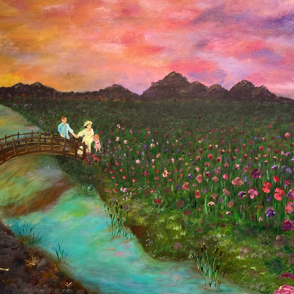

Acrylic Painting
This is an acrylic painting, I wanted to depict a journey of maternity and family. Showing that even if pregnancy is a beautiful thing there is still so much pain and suffering that is felt during that period going against the romanticization of pregnancy in many films and stories. Using nature as a representation of new life and struggle, in addition to the support felt. It is inspired by my mother and some of the difficulties she experienced when she was pregnant with my twin and me.

(Bianca Gauthier, February 2024, 31x47 inch, Acrylic Painting)